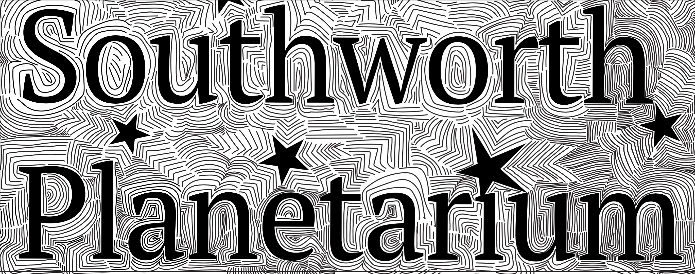

When creating a logo for the Southworth Planetarium, I pulled inspiration from past projects I had created that resembled the zentangle style. I made two attempts for this project.
Below is my first attempt at this project
Below is my final attempt at this project
